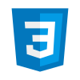

sobre
skills

Html 5

CSS

Javascript
formação e certificações
Análise e Desenvolvimento de sistemas
Uninter
2022 - 2025
cursando
Cinema
UFSC
2016 - 2021
incompleto
Nascida no interior do Rio Grande do Sul, me mudei para Santa Catarina ainda criança. Em 2016 iniciei a graduação no curso de Cinema da UFSC. No curso realizei diversos trabalhos audiovisuais e artísticos. No entanto, as oportunidades profissionais eram escassas e decidi ingressar em uma nova carreira.
Iniciei meus estudos na área da tecnologia por meio do site FreeCodeCamp. Concluí o curso de Design Responsivo para Web, com 300h de curso e com a elaboração de 5 páginas estáticas. Participei do Programa Oracle Next Education, parceria da Oracle e da Alura, que promoveu formações em soft skills, iniciante em programação, desenvolvimento front-end e introdução ao Java, com carga horária estimada em 338 horas.
Atualmente, curso Análise e Desenvolvimento de Sistemas pela Uninter e Desenvolvimento Front-end pelo Scrimba, buscando consolidar meus conhecimentos e visando uma primeira oportunidade na carreira de desenvolvedora. Sou bastante curiosa, apaixonada por enigmas e interessada pelo funcionamento das coisas. Em meu tempo livre gosto de me aventurar pelas belezas naturais de minha cidade, Florianópolis, e de estar com meus amigos e com minha família. Também sou uma grande fã de gatos, de samba e pós-punk, dos filmes de Werner Herzog e de literatura russa.
hobbies
costurar
ir à praia
ler
pedalar